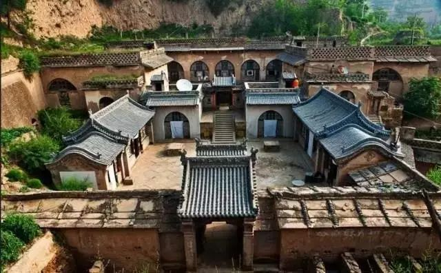
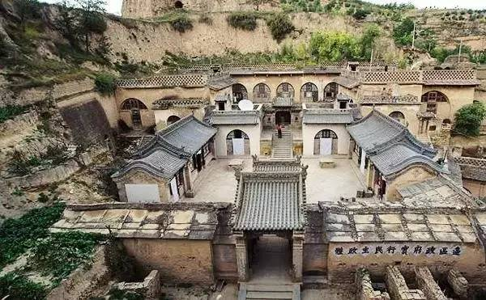
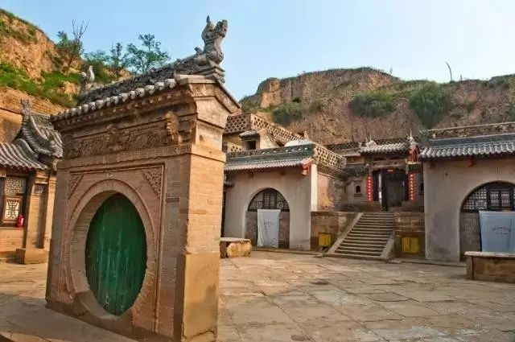
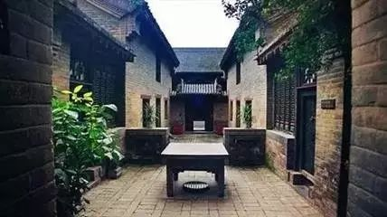
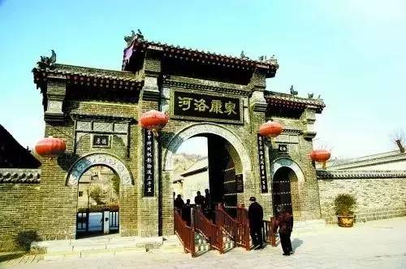
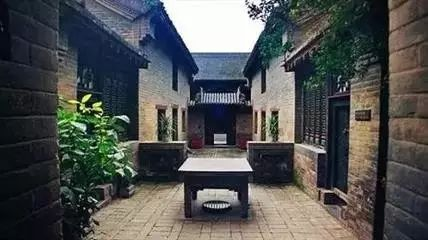
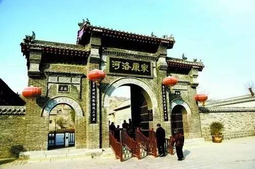

沉淀在历史尘埃中的古建筑（四）
豪宅不仅现在有，中国古代也有。米脂婆姨当家——姜氏庄园、一个家族的前赴后继——康百万庄园。
姜氏庄园



姜氏庄园，位于陕西省米脂县城东十五公里桥河岔乡刘家峁村，是陕北大财主姜耀祖于清光绪年间投巨资历时16年亲自监修的私宅。相比其他尽情展示奢华气派的地主庄园来说，它似乎崎岖、孤单、封闭，但它“无处不雕，无处不琢”的“雕”艺术却体现出独到匠心的建筑科技和历史艺术价值。
康百万庄园
 



康百万庄园又名河洛康家，位于河南省巩义市康店镇，始建于明末清初，是十七、十八世纪华北封建堡垒式建筑的代表。
康百万是明清以来对“中原活财神”康应魁家族的统称，康氏家族前后十二代人在这个庄园生活，跨越了明、清和民国三个时期，共计400余年，庄园也从最初的山腰建至山顶。康百万庄园背依邙山，面临洛水，因而有“金龟探水”的美称，是全国三大庄园(康百万庄园、刘氏庄园、牟氏庄园)之一，被誉为“豫商精神家园”，“中原古建典范” 。